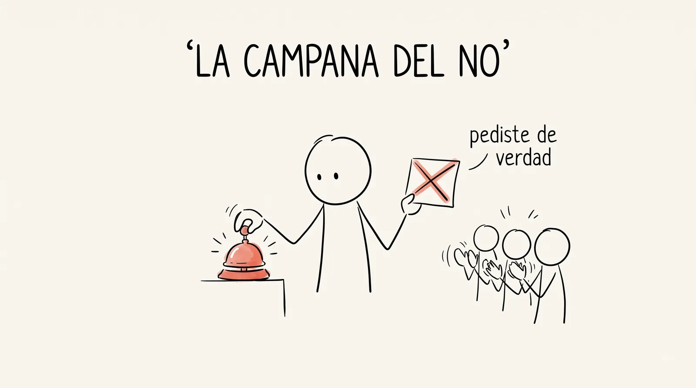
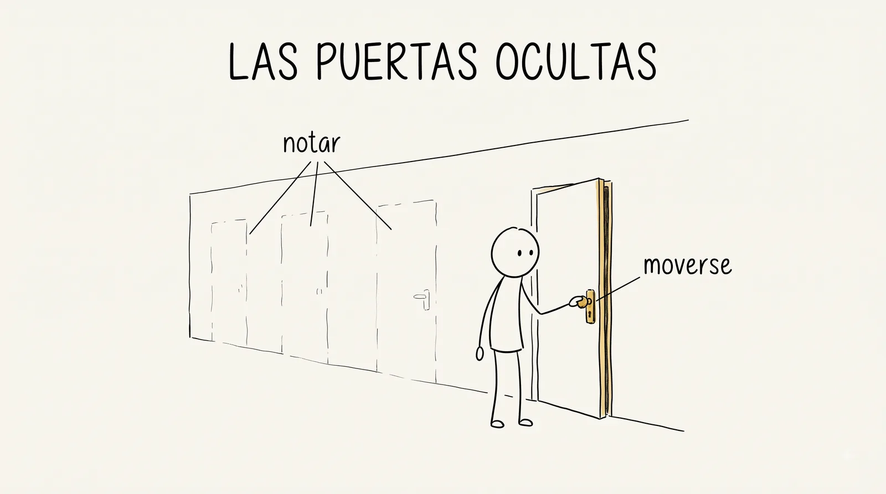
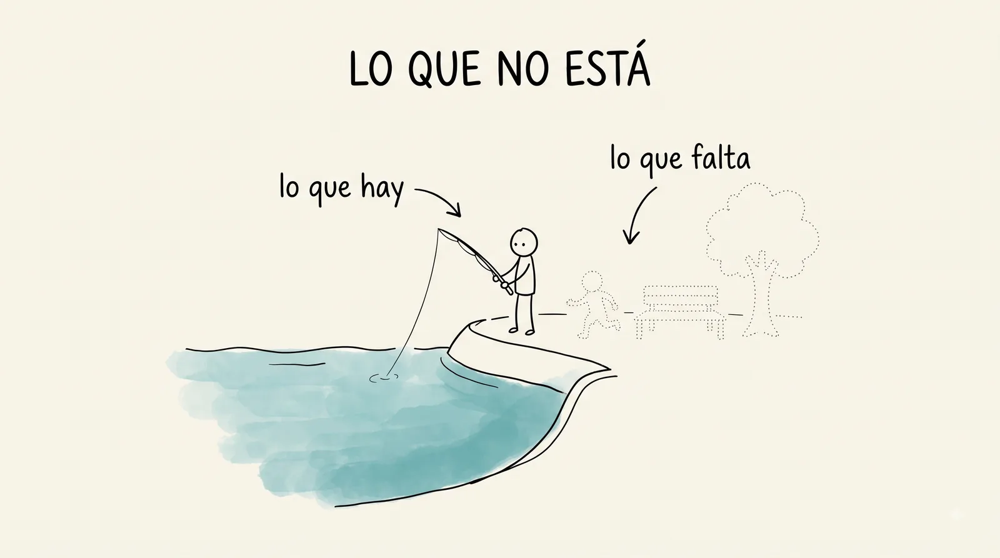

¿Qué pedirías si el no ya lo tuvieras?
La semana pasada te dije que hay cosas que no puedo enseñar: pasión, ambición, visión. Esta semana la matizamos, porque hay una que durante años se creyó de ese lado y no lo está: la proactividad. Hay gente que la estudió en serio y encontró que se entrena, como un músculo. Se llama agencia, y esta semana la empiezas a trabajar con dos aparatos: un contrato firmado y una lista de rechazos. El viernes, además, vamos a la presa por primera vez.
Esta semana podrás
- Explicar qué es la agencia (ver opciones donde otros ven pared, y actuar) y por qué se puede entrenar.
- Arrancar tu anti-currículum: el registro de lo que pidas y no salga, que también es evidencia.
- Firmar tu contrato de gestión: dos compromisos concretos y verificables para este semestre.
- Mirar la orilla de la presa como gestor: quién la usa, cómo la usa y qué no está ahí.
Las dos sesiones de esta semana
Cada día es un mazo de láminas: en clase se proyectan una por una con el botón Presentar, y aquí se quedan, en orden, para volver a ellas cuando quieras.
La agencia se entrena
Ver las puertas ocultas, atreverse a girar la perilla, y arrancar los dos aparatos que lo entrenan.
1 El ticket de la semana pasada 5 min
Al aireLo que el viernes quedó turbio, hoy se contesta en voz alta.
Este arranque no se salta ningún jueves. El ticket se sigue contestando porque se atiende: el día que lo que escribes desaparezca en un cajón, con toda razón vas a dejar de escribirlo.
Traer dos o tres respuestas del ticket ya elegidas. Leerlas textuales y responderlas ahí mismo, sin nombrar a nadie. Si algo requiere más tiempo, decir en qué semana se retoma.
2 La campana del no, estreno 10 min
Ritual · cada juevesUn no conseguido se anuncia, y el grupo aplaude.
El aplauso no es consuelo, es reconocimiento de que alguien pidió de verdad. Hoy la campana la toca el profesor, con un no propio y reciente. A partir del jueves que viene, el turno es de quien traiga uno.
Traer la campana física (o algo que suene con dignidad). Traer un no propio real, con detalle: qué se pidió, a quién, qué contestaron y qué se sintió. No pedir voluntarios hoy; el estreno carga el ritual y eso le toca al profesor. Este bloque no se recorta: abre un hilo que corre todo el semestre.

3 La agencia se entrena 20 min
"Ver las puertas ocultas en las paredes de la vida, y atreverse a girar la perilla."
Así define la agencia Cate Hall, una abogada que se reinventó varias veces: dejó los tribunales, fue jugadora profesional de póker y hoy dirige una empresa de biotecnología. Cada vuelta empezó igual: notando una puerta que ya estaba ahí, y tocándola.
Los dos músculos
Son músculos distintos y fallan por separado. Hay quien ve la puerta y no la toca, y hay quien tocaría con gusto la puerta que nunca vio. Los ejercicios de hoy entrenan los dos.
Nadie nace agéntico.
Ese es el hallazgo incómodo para los que se dicen "es que yo no soy así": la agencia se practica pidiendo, preguntando y apareciéndose. Igual que los malabares de la Semana 0: tirando la bola, aunque se caiga.

4 Gimnasio 1 · Las puertas ocultas 20 min
Actividad · en tríosSeis situaciones atoradas. ¿Dónde está la puerta que nadie ha tocado?
Con el ejercicio del gimnasio proyectado. Cada trío busca la movida agéntica de cada situación y al final se comparten dos en plenaria, de preferencia las que nadie vio.
Al elegir qué se comparte, preguntar primero cuál situación les costó más: las movidas que nadie vio enseñan más que las obvias. Si el tiempo se acorta, este bloque pasa a tarea; la campana y el Expediente Kenia no se recortan.
5 El anti-currículum 15 min
Detrás de todo currículum exitoso hay una lista más larga de noes.
Un sociólogo mexicano, Héctor Vera, publicó una lista rara: las nueve universidades que no lo contrataron, los tres posdoctorados que le negaron, las editoriales que rechazaron sus libros. Su punto: esa lista demuestra que jugaste. La tuya arranca hoy y vive en tu expediente.
Abre tu hoja de anti-currículum y escribe el primer no que ya traes de antes.
Una beca que no salió, un mensaje que nadie contestó, un equipo al que no te invitaron. Todos traemos uno. Se escribe sin adorno: qué pediste, a quién y qué pasó.
Escribir el propio en el pizarrón mientras ellos escriben el suyo, para que quede claro que la lista no es de alumnos. Nadie lee el suyo en voz alta hoy: la hoja es del expediente, no del grupo.
6 Gimnasio 2 · Mi primer no 20 min
Actividad · individual, se leen dosDiseña una petición real, con destinatario y fecha, esperando que te la nieguen.
"¿Me prestas tu cuaderno para copiar los apuntes?"
Si el sí está garantizado, no se entrenó nada.
"¿Me recibiría media hora el presidente del comité de agua para preguntarle cómo consiguieron el tanque?"
Con el ejercicio del gimnasio. Se leen dos peticiones en voz alta y el grupo las hace más ambiciosas. La petición sale de aquí con dueño y con fecha: si para el jueves ya tuviste respuesta, del tipo que sea, hay campana.
Al subir la ambición, cuidar que la petición siga siendo real y cumplible esta semana: más ambiciosa no quiere decir imposible. Anotar quién se comprometió a qué, para preguntarles el jueves sin exhibir a nadie.
7 Expediente Kenia · Entrega 1 12 min
El agua salía limpia del tubo, y los niños se seguían enfermando.
Kenia rural, hace unos años: la diarrea infantil mataba y el agua de los manantiales salía contaminada. Varias organizaciones hicieron lo obvio y lo hicieron bien: protegieron los manantiales con obra, y el agua empezó a salir limpia. La diarrea infantil casi no bajó. La obra era correcta, el agua salía limpia, y los niños se seguían enfermando. Aquí se corta la historia. La respuesta llega en la semana 6.
Contar el caso como historia, con calma, y cortar exactamente donde dice la lámina. No adelantar nada aunque pregunten: la incomodidad de quedarse sin respuesta es parte del aparato. Este bloque no se recorta.
Escribe tu hipótesis: ¿por qué no bajó la diarrea?
En tu bitácora, con tu letra y tu voz. Vale la pena apostar en serio: en la semana 6 vas a releer esta entrada con la respuesta enfrente, y la comparación es tuya.
8 Preparación de la salida 8 min
El contrato de gestión se va contigo a casa.
Se reparte hoy para leerlo con calma: tus áreas de interés, tu lista de personas puente y los dos compromisos del semestre. Se firma en casa y se trae el jueves que viene, con los dos compromisos ya escritos. Y la logística de mañana: hora y punto de reunión, zapato cerrado, agua, gorra, celular cargado y la guía de observación abierta o impresa. Si va a hacer sol, protector.
Decir hora y punto de reunión exactos y mandarlos también por WhatsApp al salir. Confirmar el transporte hoy mismo: si el grupo se cita directamente en la presa, mañana se ganan veinticinco minutos de observación.
Salida de campo a la presa
Mirar la orilla con ojos de gestor, sin anunciar nada y sin prometer nada.
1 Encuadre antes de salir 10 min
Hoy solo se observa.
Antes de subirse al transporte, cada quien abre el gimnasio 3 en el celular: esa es la guía de observación del día.
Repetir las tres reglas hasta que suenen a coro, y decir qué hacer si alguien de la comunidad pregunta qué andan haciendo: la verdad corta, "somos estudiantes de la UAQ y estamos conociendo la presa", sin una palabra más del proyecto.
2 Traslado 15 min
En el camino se forman los cuatro equipos, uno por posta.
Cada equipo llega a la orilla sabiendo qué le toca mirar. Las cuatro postas se recorren en paralelo, no en fila.
Formar los equipos en el transporte, no en la orilla: llegar a la presa con los papeles repartidos. Si el traslado toma más de quince minutos por lado, la observación baja a tres postas de veinte minutos y la posta 4 se reparte entre los cuatro equipos.
3 Posta 1 · Quién está y qué hace 15 min
En campoCuenta y describe: quiénes están, qué hacen, con quién, cuánto se quedan.
Sin interpretar todavía. "Dos señores pescando desde hace más de una hora" es un dato; "a la gente le gusta pescar" es una conclusión, y las conclusiones hoy no entran en la libreta.
4 Posta 2 · Recorridos y huellas 15 min
En campoPor dónde camina la gente de verdad, no por dónde debería.
Veredas marcadas, accesos, dónde se detienen, dónde se sientan aunque no haya dónde. Las huellas no mienten: una vereda pisada vale más que cualquier opinión sobre por dónde conviene entrar.
5 Posta 3 · Sombra, agua y basura 15 min
En campoQué sombra hay y a qué hora, dónde llega el agua en temporada, qué se acumula y quién lo recoge.
La sombra se anota con hora, porque se mueve. Del agua, buscar las marcas de hasta dónde sube. De la basura, importa tanto qué hay como si alguien la está recogiendo.
6 Posta 4 · Lo que no está 15 min
En campoLa posta más difícil: registrar ausencias.
Quién no viene a la presa, y qué se puede suponer de por qué no viene. ¿Hay niños? ¿Hay mujeres solas? ¿Hay gente mayor? Cada ausencia es una hipótesis que la consulta de la semana 4 va a poner a prueba.
A esta posta conviene el equipo más observador, no el más rápido. Si una ausencia les parece obvia ("no hay niños porque no hay nada para niños"), pedirles que la escriban como suposición, no como hecho: ese matiz es el corazón de la posta.

7 Círculo en la orilla 15 min
En campo · plenariaCada equipo dice el hallazgo que más le sorprendió, en una frase.
Se anotan todos, textuales. Esta lista es la primera evidencia de campo del proyecto y en la semana 3 se usa para diseñar la consulta: lo que hoy sorprende, mañana se pregunta.
Hacer el círculo mirando el agua, con las libretas abiertas. Anotar las frases textuales en la propia libreta y fotografiar las de los equipos: esto va a "Lo que produjimos". Si la conversación se enciende, dejarla correr recortando el regreso, no las postas.
8 Regreso 12 min
Las libretas cerradas ya no se corrigen: lo que se vio, se vio.
En el camino de vuelta se vale conversar lo que cada quien trae, pero las notas de campo quedan como quedaron. Su valor es ese: lo que se escribió frente a la cosa, no lo que se acomodó después.
9 Cierre y ticket 8 min
Antes de bajarte: el ticket de salida, desde el celular.
Noventa segundos, con nombre o sin él. Lo que escribas se lee el jueves que viene, en voz alta. Y el recordatorio del jueves: el contrato de gestión llega firmado, con los dos compromisos ya escritos.
Herramientas de la semana
La agencia se entrena
Cate Hall, una abogada que se reinventó varias veces, la define así: agencia es la capacidad de ver las puertas ocultas en las paredes de la vida, y atreverse a girar la perilla. Dos movimientos: notar que la opción existe y actuar. Su hallazgo incómodo para los que se dicen "es que yo no soy así": nadie nace agéntico. Se practica pidiendo, preguntando, apareciéndose. Igual que los malabares de la Semana 0: tirando la bola.
El anti-currículum
Un sociólogo mexicano, Héctor Vera, publicó una lista rara: las nueve universidades que no lo contrataron, los tres posdoctorados que le negaron, las editoriales que rechazaron sus libros. Su punto: detrás de todo currículum exitoso hay una lista más larga de noes, y esa lista demuestra que jugaste. Esta semana arrancas la tuya en el expediente, y estrenamos el ritual que la alimenta: la campana del no, cada jueves. Un no conseguido se anuncia y se celebra, porque significa que pediste.
Tu contrato de gestión
La agencia sin fecha es buena intención. El contrato de gestión te pide poco y en serio: tus áreas de interés, tu lista de personas y organizaciones puente, y dos compromisos firmados para el semestre: contactar al menos a una persona de tu lista (cómo y cuándo) y desarrollar una habilidad (cómo y cuándo). Va al expediente y se revisa al final. Es tuyo, no del profesor: tú eliges a quién y qué.
Un caso real que nos va a acompañar todo el semestre. Kenia rural, hace unos años: la diarrea infantil mataba y el agua de los manantiales salía contaminada. Varias organizaciones hicieron lo obvio y lo hicieron bien: protegieron los manantiales con obra, y el agua empezó a salir limpia del tubo. Ya está, ¿no? Pues no: la diarrea infantil casi no bajó. La obra era correcta, el agua salía limpia, y los niños se seguían enfermando. ¿Por qué? Eso se sabe en la semana 6. Mientras, anota tu hipótesis en la bitácora: vale la pena apostar.
Reconocimiento del sitio
El viernes caminamos la orilla de la presa de La Florida. No vamos a anunciar nada ni a prometer nada: vamos a mirar. Quién está, qué hace, por dónde camina la gente, dónde se para, qué sombra hay a las cuatro de la tarde y qué pasa donde no hay ninguna. El gimnasio trae la guía. Lo que anotes ahí es la primera evidencia de campo del proyecto.
El gimnasio
Hoja de consulta
- Agencia
- Ver las opciones que la situación de verdad ofrece (casi siempre más de las que parecen) y actuar sobre ellas. Dos músculos: notar y moverse. Se entrena con práctica, no con carácter.
- Cortejar el rechazo
- Pedir cosas donde esperas un no, a propósito, para desacoplar el no del drama. Si solo pides lo que seguro te dan, estás pidiendo poco. En gestión de proyectos esto no es filosofía: la mayoría de las solicitudes a convocatorias pierden, y el que no aguanta noes no dura en el oficio.
- Anti-currículum
- El registro de lo que pediste y no salió: becas negadas, correos sin respuesta, convocatorias perdidas. Evidencia de que jugaste. Vive en tu expediente y crece con orgullo.
- La campana del no
- Ritual de cada jueves: cinco minutos donde los rechazos de la semana se anuncian y se celebran. El aplauso no es consuelo: es reconocimiento de que alguien pidió de verdad.
- Contrato de gestión
- Documento firmado con dos compromisos verificables del semestre: contactar a una persona puente y desarrollar una habilidad, ambos con cómo y cuándo. Se guarda en el expediente y se revisa en diciembre.
- Superficie de suerte
- La suerte no es pareja: le llega más al que conoce más gente, aparece en más lugares y pregunta más. Cada conversación con alguien del medio agranda tu superficie. Por eso el contrato pide contactar, no admirar de lejos.
- El foso del estatus bajo
- Todo aprendizaje pasa por un rato de ser malo en algo y preguntar obviedades en público. Ese foso se cruza chapoteando, no en silencio. Este salón es un foso seguro: aquí ser novato no cuesta nada.
- Reconocimiento del sitio
- Primera visita de campo: observar sin intervenir. Conductas, recorridos, usos, ausencias. Todavía no preguntamos nada a nadie (eso se diseña con cuidado en la semana 3): primero los ojos, luego las preguntas.
- Expediente Kenia
- Caso real por entregas que acompaña el semestre. La entrega 1 cuenta la obra bien hecha que no bajó la diarrea infantil, y se corta ahí. Tu hipótesis va en la bitácora; la respuesta llega en la semana 6.
Lo que produjimos
Aquí quedarán las primeras entradas del anti-CV grupal, los contratos firmados (el dato, no el contenido: eso es de cada quien), las frases del círculo en la orilla y las fotos del reconocimiento de la presa.
Aviéntate 🌊
Héctor Vera dice que los rechazos que más duelen son los que ni siquiera te contestan. Y aun así volvió a pedir, cada vez. Su currículum de logros existe gracias a ese otro, el de los noes, que es más largo.
El no ya lo tienes. Esta semana ve por el sí, y si no sale, toca la campana.
Esta semana todavía no abre.
Disponible a partir del . Mientras tanto puedes entrar a todo el gimnasio, a la Semana 0 y a Tu calificación, que están siempre abiertos.